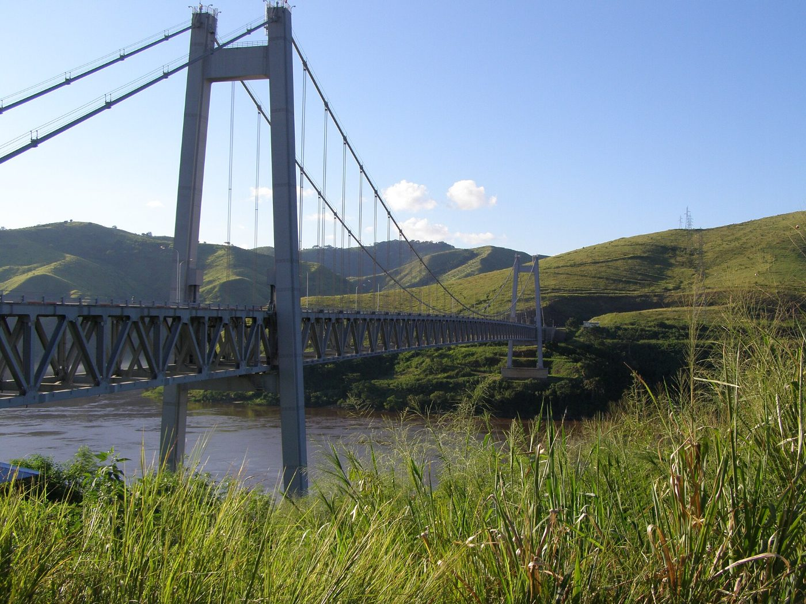

Matadi plant
2,800 t/d clinker line, two cement mills including a vertical mill commissioned in 2026, automatic bagging at 2,400 bags/h and bulk loading.

Five sites between Boma and Kikwit, linked by national road no. 1, the Matadi–Kinshasa railway and river barges.
2,800 t/d clinker line, two cement mills including a vertical mill commissioned in 2026, automatic bagging at 2,400 bags/h and bulk loading.

Limestone deposit with 38 years of reserves at the current rate. Blasting twice a week, primary crushing on site, covered conveyor to the plant.

Receives by rail and road, local bagging, 90 m³/h batching plant and river quay for barges to Bandundu, Mbandaka and Kisangani.

Serves Bas-Fleuve and Muanda. Open Monday to Saturday, customer pick-up and delivery.

First depot outside Kinshasa-Kongo Central. Supplied via the N1, it serves Kwilu and Kwango.

Illustrative figures: fictitious company created for demonstration.
Clinker is burnt at Matadi, cement ground and bagged at Matadi and Limete, then distributed by rail, road and river.
How cement travels
Three SCTP trains a week between the plant and the Limete terminal: 300,000 t a year, 9,000 fewer trucks on the N1.
Hauliers under framework contracts for Kinshasa, Boma and Kikwit, sheeted trucks and bulk tankers. GPS tracking of every load.
400 t barges from the Limete quay to Bandundu, Mbandaka and Kisangani, six to thirty days depending on destination.
Plant counter, terminal, depots and approved retailers. Approved retailers display the CDF sign and sell at recommended prices.
| City | Address | Outlet | Phone |
|---|---|---|---|
| Kinshasa | Limete, 7e rue | Terminal CDF | +243 81 000 00 02 |
| Kinshasa | Ngaliema, av. de la Libération | Ets Kabeya & Fils | +243 99 000 00 10 |
| Kinshasa | Masina, marché de la Liberté | Quincaillerie Mama Lisa | +243 84 000 00 11 |
| Matadi | Ville-Basse, route de la Carrière | Comptoir usine | +243 81 000 00 01 |
| Boma | Av. du Port | Dépôt CDF Boma | +243 81 000 00 03 |
| Kisantu | Route N1, PK 118 | Matériaux Nsanda | +243 82 000 00 12 |
| Kikwit | Quartier Nzinda | Dépôt CDF Kikwit | +243 81 000 00 04 |
| Mbandaka | Port fluvial | Ets Bolingo Matériaux | +243 85 000 00 13 |
Illustrative figures: fictitious company created for demonstration.